Service Product Manager
ABOUT ME
약 9년간 캐시워크, 야놀자, NHN FashionGo, NHN Commerce에서
B2C/B2B 서비스를 기획해왔습니다.
제가 기획을 시작할 때 가장 먼저 하는 일은 데이터로 현재 상태를
정확히 파악하는 것입니다. Heap, GA, Superset 등을 직접 분석하며
"왜 사용자가 이 지점에서 이탈하는가"를 수치로 확인하고,
그 원인에 맞는 구조를 설계합니다.
NHN 글로벌(LA) 본사와의 협업을 통해 영어 기획서 작성과
글로벌 팀 커뮤니케이션 경험도 쌓았습니다.
KEY NUMBERS
서비스/플랫폼 기획자 · 2025.04 – 현재 · 약 1년+
고도몰 솔루션 기반 B2C/B2B 서비스 기획. 선물하기 시스템 재설계 및 SNS 로그인 서비스 기획 담당.
서비스 기획자 · UX 기획 · 2022.04 – 2025.03 · 약 3년
북미 1위 B2B 패션 플랫폼 FashionGo의 플랫폼 UX 기획 전반 담당. LA 본사(NHN Global)와 협업하여 영어 기획서 작성 및 글로벌 팀 커뮤니케이션 수행.
서비스 기획자 · 2022.01 – 2022.03 · 약 3개월 (FashionGo Korea 법인 분리 이전)
UX/UI 기획자 · 2019.05 – 2022.01 · 약 2년 8개월
야놀자 앱서비스 전반의 UX/UI 기획. 사용성 테스트(UT) 설계·운영 및 경쟁사 리서치 수행.
UX/UI 기획 및 디자인 · 2016.09 – 2019.05 · 약 2년 8개월
만보기 리워드 앱 캐시워크 창업 초기 합류. UX/UI 기획부터 디자인까지 직접 수행. 서비스 출시 후 MAU 500만 달성.
FG Angels — AI Agent for FashionGo · NHN Commerce
북미 1위 B2B 패션 플랫폼 FashionGo의 아시아 공장 소싱 전 과정을 AI 에이전트로 자동화한 PoC. 12팀 중 1위로 선정, 상금 1,000만원 수상. 도메인 전문가 · 기획자(본인) · 개발자 3인 크로스펑셔널 팀.
한국소프트웨어기술진흥협회 (KOSTA)
UX/UI 디자이너 양성 과정 수료. 사용자 경험 설계와 UI 디자인 실무 트레이닝.
한국산업인력공단
자격번호 15203120052V
T아카데미 (SK플래닛) · 창조경제혁신센터
강사 · 2시간 세션
UI/UX 디자이너 직무를 처음 접하는 분들을 위한 IT직무프리뷰 강의. 실무 흐름과 PM과의 협업 관점을 공유.
강사 · 2시간 세션
UI/UX 디자인 실무자 양성을 위한 원데이실무톡 5기 강의. 현업 사례를 중심으로 한 실무 톡 세션.
| 분류 | 도구 |
|---|---|
| 기획 · 디자인 | Figma · Sketch · Jira |
| 데이터 분석 | Heap · Google Analytics · Superset · Tableau |
| 리서치 · 협업 | Beusable · Slack · Google Workspace |
| AI 도구 (최근) | Lovable · Claude Code · Gemini 2.5 Flash · Vertex AI |
9년+ 서비스 기획 · UX/UI 경험으로 만든 6개 프로젝트. 각 카드를 클릭하면 프로젝트 상세 페이지로 이동합니다.
검색 결과가 없습니다.
북미 1위 B2B 패션 플랫폼 FashionGo의 아시아 공장 소싱 전 과정을 AI 에이전트로 자동화한 PoC. 도메인 전문가 · 기획자(본인) · 개발자 3인 크로스펑셔널 팀으로 기획부터 동작하는 프로토타입까지 단기간 완성.
NHN AI 스프린톤 업무생산성 트랙 1위선물을 "상태를 가진 독립 엔티티"로 재정의해, B2C 단건부터 B2B 50명 다수 수신까지 단일 플로우에서 처리하도록 설계한 고도몰 공통 기능. 출시 후 솔루션 도입률을 30% → 43%로 끌어올림.
LA 본사·한국팀의 등급 기준 갈등을 Heap 데이터 분석으로 정렬해 "연 매출액" 기준으로 합의. 출시 1년 만에 VIP 그룹 주문액 +23%(비VIP +6%의 약 4배) 성장.
행동 데이터·VOC·경쟁사 벤치마킹 3축 리서치를 근거로, 리워드 정책 + 정책 매트릭스 + UI 구조 개편을 함께 묶어 신뢰의 루프를 만든 프로젝트. 실질 리뷰 참여율 +11.2%p.
PDP · 통합예약 · 로그인 플로우를 UT 기반으로 진단하고, "슬라이더가 직관적"이라는 디자인 직관을 UT 데이터로 기각한 뒤 달력 UI 위에서 CTA 구조만 재설계해 전환율 향상.
스타트업 초기 멤버로 기획·UX·정책·바이럴 설계·운영 화면·UI 디자인까지 직접 수행. 걸음 수 구간별 차등 단가로 양면 시장 균형을 맞춰 국내 만보기 리워드 최초 MAU 500만 달성.
북미 1위 B2B 패션 플랫폼 FashionGo의 아시아 공장 소싱 전 과정을 AI 에이전트로 자동화한 PoC. 도메인 전문가 · 기획자(본인) · 개발자 3인 크로스펑셔널 팀으로 기획부터 동작하는 프로토타입까지 단기간 완성.
FG Angels는 북미 1위 B2B 패션 플랫폼 FashionGo의 아시아 공장 소싱 전 과정을 AI 에이전트로 자동화한 PoC입니다. 3년·50번의 출장이 필요하던 수동 소싱 프로세스를 AI 파이프라인으로 대체하는 것이 목표였습니다.
단 3인 크로스펑셔널 팀(도메인 전문가 · 기획자(본인) · 개발자)으로 기획부터 동작하는 프로토타입까지 단기간에 완성했고, NHN AI 스프린톤 업무생산성 트랙에서 12팀 중 1위로 선정됐습니다.
FG Angels는 단순 업무 효율화 도구가 아니라, 글로벌 B2B 공급망 전 산업으로 확장 가능한 AI 인프라 구조로 설계했습니다. 비개발자 기획자가 Lovable과 Claude Code를 직접 활용해 프로토타입을 End-to-End로 리딩한 것이 핵심입니다.
FashionGo는 GMV 1조원 · 바이어 ~100만명 규모의 플랫폼이지만, 가장 중요한 공급망(소싱) 단계가 100% 수동으로 운영됐습니다. 공급망 디지털화가 거래 단의 규모를 따라가지 못한 상태가 핵심 문제입니다.
아시아 공장 소싱이 3년 · 50번의 출장이 필요한 100% 수동 방식으로만 운영되어 시간·비용 비효율이 큽니다.
중국·한국 공장(1688 · Alibaba) → ERP → FashionGo로 이어지는 공급망 전체에 AI 자동화가 적용되지 않았습니다.
거래 단(GMV 1조 · 바이어 100만)에 비해 공급망 디지털화는 크게 뒤처져 성장 한계를 만들고 있습니다.
세 문제는 따로가 아니라 하나의 사슬입니다. 수동 의존이 자동화 부재의 원인이며, 그 결과 디지털화 격차가 누적됩니다. 단계별 도구 개선이 아닌, 소싱 파이프라인 전체를 AI로 재설계해야 풀리는 문제입니다.
목표는 단기 PoC를 통해 AI 에이전트 기반 소싱 파이프라인의 가능성을 검증하는 것이었습니다. 기획부터 동작하는 프로토타입까지 3개월 안에 End-to-End로 완성하는 것이 1차 성공 조건이었습니다.
| 지표 | 목표 | 결과 | 비고 |
|---|---|---|---|
| PoC 완성도 | 동작하는 프로토타입 | End-to-End 동작 | Lovable 기반 배포 완료 |
| 대외 검증 | 스프린톤 통과 | 1위 · 상금 1,000만원 | 업무생산성 트랙 12팀 中 |
| 대중 노출 | — | 한경 등 뉴스 기사 2건 | YouTube 데모 영상 공개 |
| 기획자 직접 구현 | 아이디어 → 동작 | 비개발자 E2E 완성 | Lovable + Claude Code 활용 |
네 결과 중 가장 의미 있는 건 비개발자 기획자가 동작하는 프로토타입을 직접 만들어 검증까지 받아냈다는 점입니다. 나머지(스프린톤 수상 · 뉴스 노출)는 이를 뒷받침하는 결과 지표이고, 기획자의 직접 구현이 이번 프로젝트가 보여준 새로운 작업 방식의 핵심입니다.
FG Angels의 핵심은 트렌드 분석 → 공장 소싱 → 스코어링 → 자기학습 → 자동 등록까지 이어지는 5단계 자동화 파이프라인입니다. 24h Agent로 무중단 동작하도록 설계했습니다.
단순 업무 효율화가 아닌 글로벌 B2B 전 산업으로 확장 가능한 AI 인프라 구조로 설계했습니다. 5단계는 패션·소싱에 국한되지 않고, 다른 도메인의 공급망에도 그대로 응용 가능한 추상화 수준을 유지했습니다.
비개발자 기획자 · 도메인 전문가 · 개발자, 3인이 Lovable · Claude Code · Git을 결합해 동시다발적으로 커밋·배포한 AI 네이티브 협업 구조입니다. 기획자가 Git 워크플로우에 직접 참여한 것이 가장 큰 차별점입니다.
자연어 프롬프트로 React 화면을 즉시 생성·수정. 기획자가 직접 UI를 만들어 빠르게 검증.
Lovable이 다루기 어려운 복잡 로직 · API 연동 · 머지 충돌을 CLI 기반으로 처리. 코드 품질 보강.
Lovable 프로젝트를 GitHub에 연결. 3명이 각자 브랜치에서 동시 작업, 머지 후 자동 배포까지.
북미 패션 트렌드 분석 및 리포트, 소싱 가능 상품 · 타겟 상품 · 유사 상품 자동 매칭 기능을 직접 구현. Lovable로 화면을 만들고 Claude Code로 로직·디테일을 다듬어 git commit · push까지. 비개발자도 Git 워크플로우에 직접 참여.
Vertex AI · Gemini 연동 → Claude Code로 리팩토링 → git commit · push.
공장 스코어링 룰 설계와 대시보드 에이전트 프로세스 정립을 담당. 도메인 지식을 기준으로 룰을 짜고, Claude Code로 코드화 → git commit · push.
결과적으로 비개발자 기획자도 Git 워크플로우에 직접 참여해 코드를 커밋·배포할 수 있었고, AI가 충돌 해결·코드 품질을 보조하면서 3인 팀의 개발 속도를 크게 단축시켰습니다. 기획자가 Service Launcher가 될 수 있다는 가설을 실제 출시로 증명한 사례입니다.
서비스 UI · 어드민 대시보드 · 팀 활동을 한 자리에 모았습니다. 6번째 슬롯에 추후 이미지를 추가할 예정입니다.
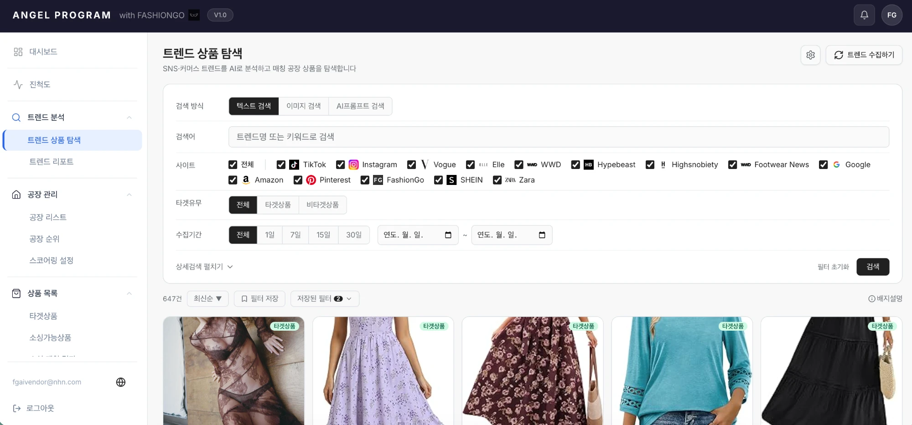
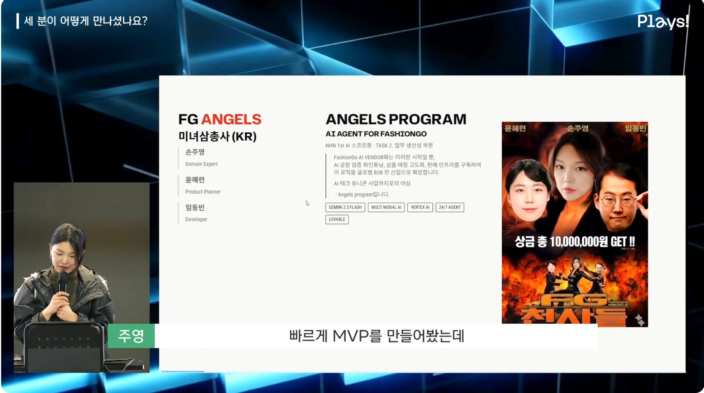
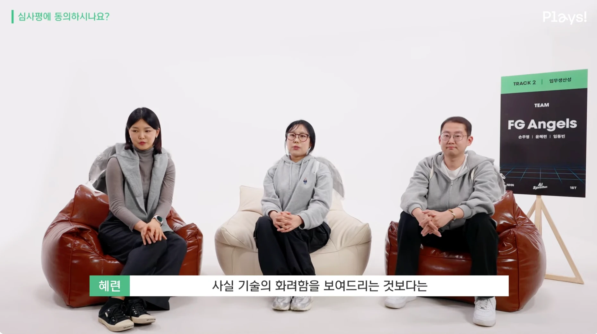
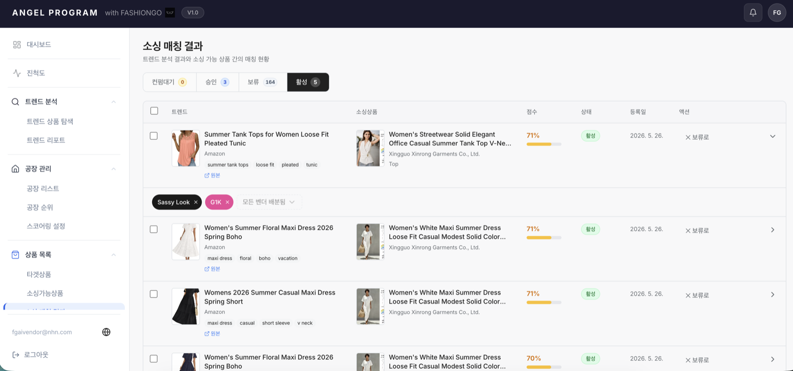
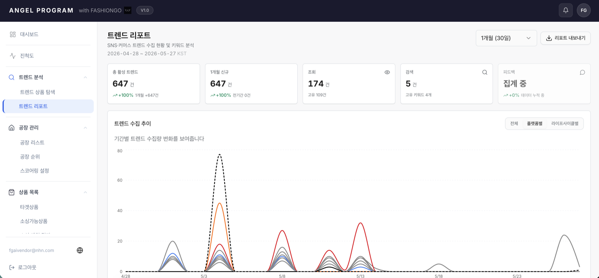
이번 프로젝트가 남긴 가장 큰 자산은 결과물 자체가 아니라, "기획자가 직접 서비스를 런칭할 수 있다"는 가설을 스스로 검증했다는 점입니다.
도메인 전문가 · 개발자와 함께 아이디어부터 실제 동작하는 AI 에이전트까지 단기간에 구현. 각 역할의 언어를 이해하고 조율하는 기획자의 역할을 체득.
AI 툴(Lovable · Claude Code 등)을 직접 다루어 기획서를 넘어 실제 동작하는 프로토타입을 구현. 기획자도 서비스를 직접 런칭할 수 있음을 스스로 증명.
실제 서비스 · 발표 자료 · 데모 영상 · 뉴스 보도를 모두 모았습니다.
| 구분 | 제목 | 링크 |
|---|---|---|
| 실제 서비스 | FG Angels (Lovable) | factory-finder-fashiongo.lovable.app |
| 발표 자료 | Gamma 슬라이드 | gamma.app/docs/FG-Angels |
| 뉴스 | 한국경제 (092) | n.news.naver.com/092/0002418772 |
| 뉴스 | 한국경제 (018) | n.news.naver.com/018/0006245221 |
"구매자 = 수신자"를 전제로 한 단일 주문 구조를, 구매 주체와 수신 주체를 분리한 다수 수신 구조로 재설계. B2C 단건부터 B2B 50명 다수 수신까지 단일 플로우에서 처리하도록 만든 NHN Commerce 고도몰 공통 기능.
고도몰의 선물하기 기능은 "구매자 = 수신자"라는 단일 주문 구조를 전제로 만들어져 있었습니다. 기업 고객이 직원에게 선물을 보내려면 한 명당 한 건씩 결제·발송해야 하는 비효율이 VOC로 반복 접수됐고, 이를 해결하기 위해 선물의 본질부터 다시 정의한 프로젝트입니다.
선물을 "상태를 가진 독립 엔티티"로 재정의하고, 구매 주체(Buyer)와 수신 주체(Recipient)를 분리해 B2C 단건부터 B2B 50명 다수 수신까지 단일 플로우에서 처리되도록 설계했습니다.
화면을 새로 그리는 기능 추가가 아니라, "선물"이라는 도메인 개념 자체를 재정의한 것이 핵심입니다. 엔티티 재설계 덕분에 B2B 다수 수신은 새 기능 추가가 아닌 같은 플로우의 확장 케이스가 되었고, 향후 정책 변경만으로 스케일이 가능합니다.
기존 구조의 한계는 단순한 "기능 부족"이 아니라, 도메인 모델 자체가 다대다 발송을 가정하지 않은 것에서 비롯됐습니다. 수정 비용이 컸던 이유도 여기에 있습니다.
"구매자 = 수신자" 전제로 설계되어 한 번의 주문으로 한 명에게만 선물 발송 가능. B2B 다수 수신을 표현할 데이터 구조 자체가 없었습니다.
기업 고객이 직원 50명에게 선물을 보내려면 50번 개별 주문해야 하는 운영 비효율이 VOC로 반복 접수됐습니다.
정산·취소·CS 로직 모두 "단건 주문" 가정 위에 만들어져 있어, 발송 단위가 늘면 처리 비용이 선형 이상으로 증가합니다.
이 세 문제는 화면·기능 패치로는 풀리지 않습니다. "선물은 1:1이다"라는 도메인 가정 자체를 깨야 정산·CS까지 일관성이 유지된 채로 다수 수신을 지원할 수 있습니다.
목표는 단순히 "다수 수신 기능 추가"가 아니라, B2C·B2B를 같은 플로우로 흡수하고 솔루션 도입률을 끌어올리는 것이었습니다. 도입률은 기능의 시장 적합성을 보여주는 가장 직접적인 지표입니다.
| 지표 | 출시 전 | 현재 | 목표 |
|---|---|---|---|
| 고도몰 솔루션 도입률 | 30% | 43% (+13%p) | 50%↑ |
| 다수 수신 지원 | 불가 | 최대 50명 | 정책 확장으로 스케일 |
| B2B 운영 비효율 | 50건 주문 필요 | 1건 주문 (단일 플로우) | 운영 비용 절감 |
| 상점 매출 기여 | — | 측정 중 | +10% |
가장 의미 있는 결과는 튜닝 단계에서 고도몰 공통 기능으로 전환된 것입니다. 단일 쇼핑몰의 부가 기능이 아니라 솔루션 전체에 기본 탑재되는 표준 기능이 되면서, 도입률이 자체적으로 상승하는 구조가 만들어졌습니다.
단순 화면 변경이 아닌, 도메인 모델 · 플로우 · 운영 정책을 함께 다시 짠 설계입니다. 네 가지 결정이 전체 구조를 지탱합니다.
선물을 단순한 주문 옵션이 아니라 "상태를 가진 독립 엔티티"로 모델링. 발송 · 도착 · 수령 · 환불 등 각 상태 전이를 명시적으로 다뤄 정산·CS·취소까지 일관되게 처리됩니다.
구매 주체(Buyer)와 수신 주체(Recipient)를 별도 엔티티로 분리. 한 명이 여러 명에게, 또는 여러 명이 한 명에게 보내는 모든 케이스가 같은 데이터 구조로 표현됩니다.
B2C 단건(1:1)과 B2B 다수 수신(1:50)을 같은 결제·발송 플로우에서 처리. 사용자 입장에서는 "받는 사람을 한 명 추가하느냐, 50명 추가하느냐"의 차이일 뿐입니다.
수신인 50명 상한선은 무제한 확장이 아니라, CS · 정산 · 취소 리스크를 MVP에서 관리 가능한 범위로 정한 의도된 제약. 이후 정책 확장만으로 스케일하도록 설계했습니다.
서비스 사용자 플로우와 모바일 화면을 함께 정리했습니다.
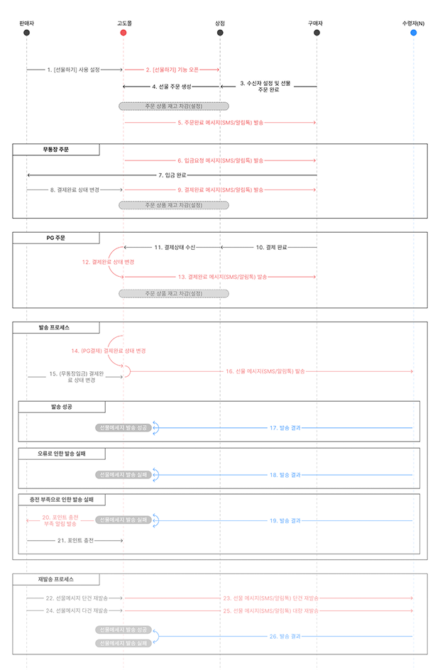
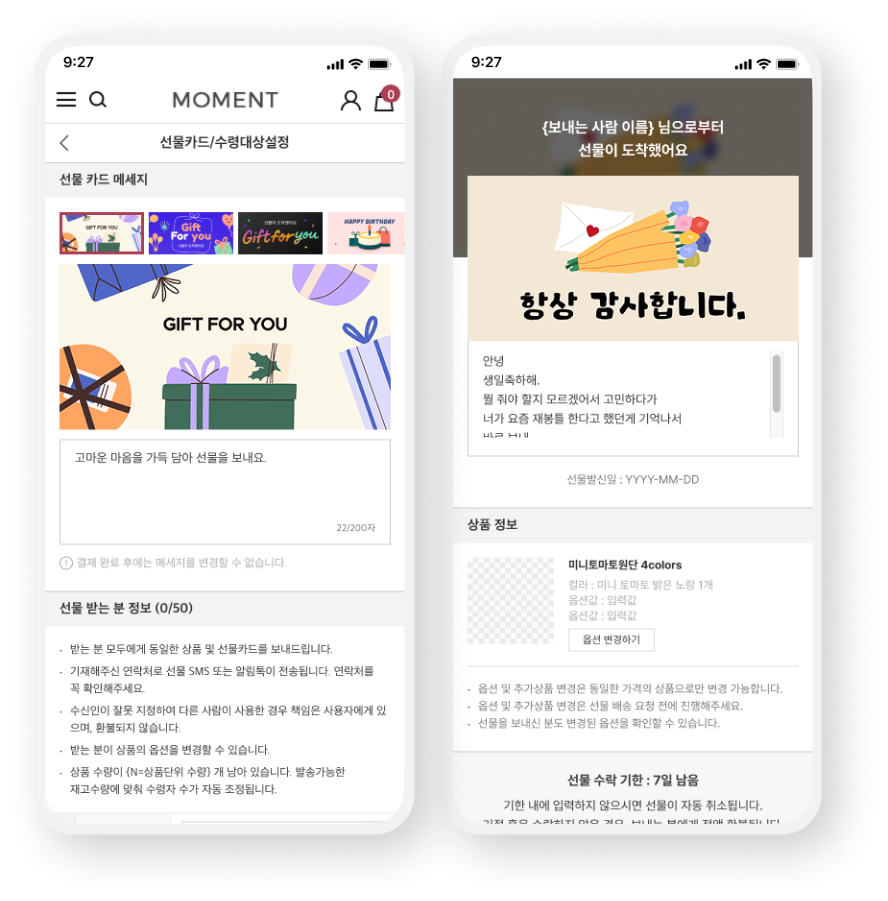
고도몰 솔루션의 매출 성장 페이지와 운영자 매뉴얼에서 선물하기 기능의 실제 적용 모습을 확인할 수 있습니다.
| 구분 | 제목 | 링크 |
|---|---|---|
| 서비스 소개 | 고도몰 매출 성장 — 선물하기 | godo.co.kr/revenue-growth#gift |
| 운영 전략 | 시즌 매출을 키우는 선물하기 운영 전략 | godo.co.kr/main/class/81/...5197 |
| 매뉴얼 | 고도몰 운영 매뉴얼 | manual.godomall.com/.../goods |
FashionGo B2B 플랫폼의 상위 매출 사용자를 식별·유지하고, 일반 사용자의 등급 진입을 유도하는 멤버십 구조 시스템. LA 본사와 한국팀의 등급 기준 갈등을 데이터 분석으로 정렬하고, 출시 1년 만에 VIP 그룹 주문액 +23%를 만든 프로젝트.
FashionGo는 거래액의 상당 부분을 상위 매출 사용자가 만들지만, 이들을 별도로 식별·관리하는 구조가 없었습니다. 고매출 사용자에게 가치를 돌려주고 일반 사용자에게 등급 진입 동기를 부여하는 멤버십 시스템이 필요했고, 이를 1년에 걸쳐 설계·출시·검증한 프로젝트입니다.
LA 본사·한국팀의 등급 기준 정렬부터, 출시 후 가설 검증·확장까지 데이터를 근거로 의사결정을 끌어낸 것이 차별점이었습니다.
이 프로젝트의 본질은 "VIP 화면을 새로 만든다"가 아니라, "등급이라는 운영 개념을 데이터·정책·UI 차원에서 동시에 세우는 것"이었습니다. 등급 기준이 정렬되어야 운영이 일관되고, 운영이 일관되어야 사용자가 등급의 가치를 인지하기 때문입니다.
단순히 "VIP 화면이 없다"가 아니라, VIP를 정의하는 기준·인지·신규 유입 세 축이 모두 비어 있는 상태였습니다. 셋 중 하나만 풀어도 다른 두 개가 다시 무너지는 구조였습니다.
LA 본사는 "연 주문 건수", 한국팀은 "연 매출액" 기준을 주장. 패션 B2B 특성상 단가·주문 빈도가 벤더마다 달라, 기준에 따라 VIP 명단이 완전히 달라지는 상태.
일반 사용자 중 VIP 프로그램을 인지하는 비율이 20%에 그침. 등급의 혜택과 진입 조건이 외부에 명시적으로 노출되지 않아 동기 부여가 일어나지 않음.
VIP 명단의 90%가 매년 고정되어 있어, 안정적 매출원이긴 하지만 신규 진입이 거의 없음. 등급 시스템이 "닫힌 그룹"으로 인식되는 위험.
세 문제는 같은 사슬입니다. 기준이 불명확하니 운영이 흔들리고, 운영이 흔들리니 인지가 안 되고, 인지가 안 되니 신규가 안 들어옵니다. 기준 정렬에서 출발해 인지·유입까지 일관되게 풀어야 등급 시스템이 작동합니다.
목표는 VIP 그룹의 매출 기여를 증명하고, 일반 사용자의 등급 인지·진입을 늘리는 것이었습니다. 출시 1년이 지난 시점의 결과는 다음과 같습니다.
| 지표 | 출시 전 | 출시 1년 후 | 해석 |
|---|---|---|---|
| 전체 플랫폼 주문액 | 기준선 | +10% YoY | 플랫폼 전체 동반 성장 |
| VIP 그룹 주문액 | 기준선 | +23% | 비VIP(+6%) 대비 약 4배 |
| VIP 등급 기준 VOC | 다수 접수 | −70% | 등급 기준 명확화 효과 |
| 쿠폰 자동 지급 참여 판매자 | 0% | 8% | VIP 대상 자동 지급 운영 시작 |
| 8월 기준 Active User | — | 52K | VIP 배지 노출로 일반 사용자 인지 확산 |
가장 중요한 결과는 VIP 그룹이 비VIP 대비 약 4배 빠른 성장률을 기록했다는 점입니다. "고매출 그룹에 집중하는 것이 전체 매출을 키운다"는 가설이 실제 데이터로 증명되었고, 이는 향후 마케팅·운영 자원 배분의 근거가 됩니다.
프로젝트 초기 가장 큰 의사결정은 "VIP 등급을 무엇으로 정의할 것인가"였습니다. LA 본사와 한국팀의 입장 차이를 감정·권위가 아닌 데이터로 정렬한 과정이 핵심이었습니다.
LA 본사는 직관적인 "연 주문 건수"를, 한국팀은 비즈니스 임팩트 중심의 "연 매출액"을 주장. 패션 B2B 특성상 대형 벤더는 단가가 높고 소량 주문하고, 소형 벤더는 다수 소액 주문을 넣어 기준에 따라 VIP 명단이 거의 달라지는 상황.
2022 – 2024년 Heap 데이터를 분석해 "연 매출 $300K 이상 구매자가 전체 거래액의 약 62%를 차지"한다는 사실을 수치로 제시. 이를 영어 분석 보고서로 LA 팀과 공유해 "연 매출액" 기준으로 정책 합의.
VIP 등급 기준이 명확해지면서 관리자 운영 공수가 줄었고, "왜 나는 VIP가 아닌가" 판매자 문의가 출시 후 1분기 내 70% 감소. 의사결정의 근거가 명확하니 외부 설명도 일관되게 가능해진 사례.
이 사례는 글로벌 본사와의 의견 충돌을 "이긴다"가 아니라 "정렬한다"의 방식으로 푼 케이스입니다. 양 팀이 동의할 수 있는 공통 언어(데이터)를 만들어 제시하는 것이 PM의 핵심 역할임을 체득.
출시 1년 시점에 프로그램의 운영 가설을 검증하기 위해 분석한 데이터입니다. 결과는 "집중 관리가 전체 매출을 끌어올린다"와 "VIP 노출이 간접 홍보 효과로 작동한다" 두 가설을 모두 지지합니다.
명단이 90% 고정된 것은 VIP가 안정적 매출원이라는 신호이지만, 인지도가 20%에 그치는 것은 신규 유입을 위한 인지 확산이 핵심 과제임을 보여줍니다. 두 수치를 함께 봐야 다음 액션이 보입니다.
2022 → 2025년 추이를 보면 TP(VIP) 주문액이 매년 전체 거래액 대비 비중을 키우며 동반 성장. VIP 그룹에 집중된 운영이 전체 매출을 견인한다는 가설을 4개년 데이터로 검증.
프로그램 운영 이후 일반 사용자의 Premier 전환율이 매년 확대. VIP 배지 노출만으로도 일반 고객의 등급 인지·도전 행동을 유도하는 간접 홍보 효과가 확인됨.
월요일(8/5) 발송 직후 Item Detail에서 569 클릭 피크를 기록한 뒤 Tue – Thu 동안 점진적 감소. 주요 진입 경로는 Item Detail · Vendor Home이며 Live Detail은 0.07%로 미미. * 8월 기준 Total Active User = 52,658.
사용자가 마주하는 VIP 환영 화면과 등급 진행·성장 트래킹 화면입니다.
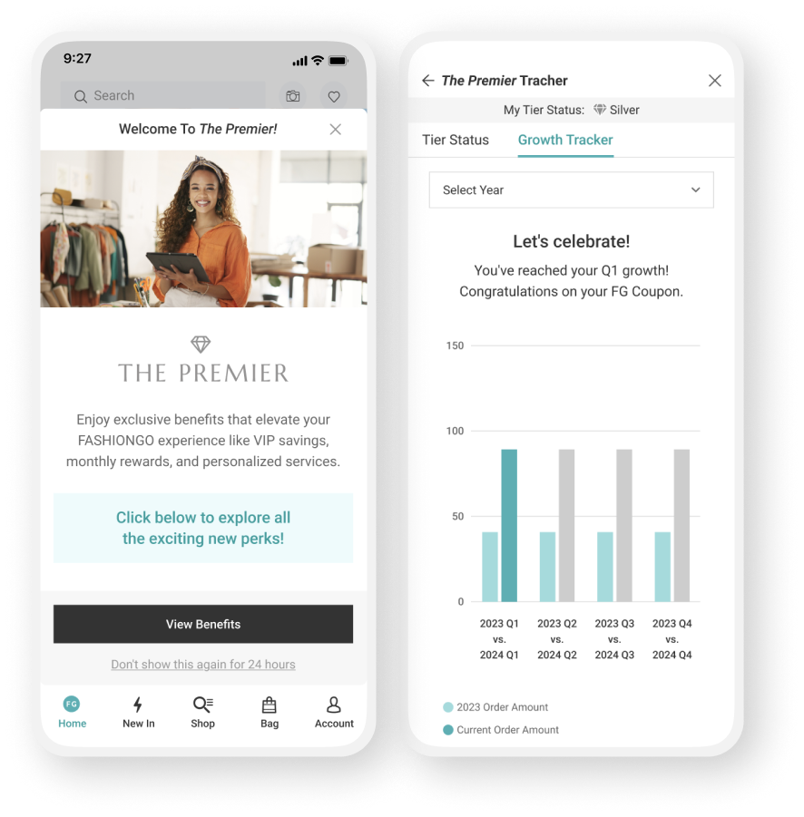
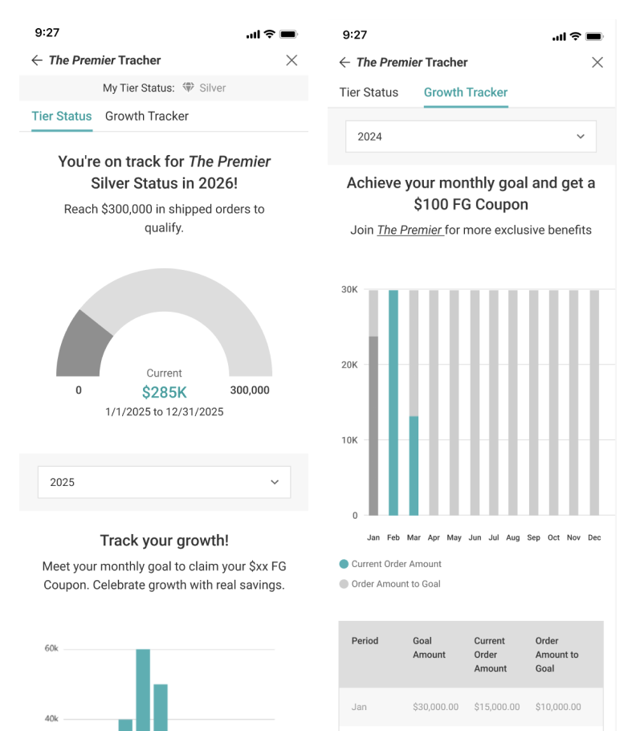
FashionGo 플랫폼과 NHN 사내 매거진의 관련 자료입니다.
| 구분 | 제목 | 링크 |
|---|---|---|
| 실제 서비스 | FashionGo | fashiongo.net |
| 사내 매거진 | NHN Inside · Service | inside.nhn.com/service/106 |
| 사내 매거진 | NHN Inside · People & Culture | inside.nhn.com/peoplenculture/195 |
FashionGo의 후기 참여율 저조와 신규 벤더 신뢰도 저하 문제를, 리워드 정책 + 정책 매트릭스 + UI 구조 개편을 함께 묶어 풀어낸 프로젝트. 행동 데이터·VOC·경쟁사 벤치마킹 3축 리서치를 근거로 설계하고, 실질 리뷰 참여율을 +11.2%p 끌어올렸습니다.
FashionGo는 장바구니에 상품을 담은 사용자 중 결제까지 도달하는 비율이 40% → 12%로 28%p가 새는 구조였습니다. CS 티켓을 분석하니 이탈의 핵심 원인은 가격이 아니라 "리뷰가 없어 상품 품질을 믿을 수 없다"는 신뢰 부재였습니다.
이를 풀기 위해 행동 데이터·VOC·경쟁사 벤치마킹을 결합한 리서치를 진행하고, 리워드 정책 + 정책 매트릭스 + UI 구조 개편을 함께 묶은 시스템으로 출시했습니다. 결과적으로 실질 리뷰 참여율을 16.5%(+11.2%p)까지 올렸습니다.
이 프로젝트의 본질은 "리뷰 작성 화면을 예쁘게 만든다"가 아니라, "리뷰가 만드는 신뢰의 루프 자체를 시스템으로 설계한다"입니다. 리워드 · 정책 · UI 셋 중 하나만 바꿔서는 작동하지 않고, 세 축을 함께 묶었을 때 신뢰의 사슬이 회복됩니다.
매출 누수의 원인이 가격·UI가 아니라 "신뢰의 부재"에서 비롯된다는 가설을 데이터로 확인했습니다. 신뢰 부재는 다시 리뷰 부족이 만들고, 리뷰 부족은 다시 신뢰 부재를 강화하는 사슬입니다.
1주일간 장바구니에 1개 이상 보관한 고객은 40%인 반면, 결제까지 완료하는 고객은 12%. 28%p가 매주 누수되는 큰 갭이 존재.
Heap 분석 결과 리뷰 수 5개 미만 상품의 이탈률이 평균 대비 2.3배 높음. 리뷰 부족이 단순한 보조 지표가 아닌 매출에 직접 작용하는 핵심 변수.
CS 티켓 300건 중 34%가 "상품 품질을 믿을 수 없어 망설였다"는 패턴. 가격이 아닌 신뢰가 구매 결정의 병목.
세 문제는 닫힌 사슬을 이루고 있습니다. 리뷰가 부족 → 신뢰 부족 → 이탈 → 리뷰 더 부족. 사슬의 어느 한 고리만 끊지 못하면 다른 두 개가 다시 복구되기 때문에, 리워드·정책·UI를 동시에 다뤄야 했습니다.
의사결정의 근거를 한 가지 데이터에 의존하지 않기 위해 행동 데이터·VOC·경쟁사 벤치마킹 세 축으로 리서치를 구성했습니다. 세 축이 같은 방향을 가리켰을 때 설계 방향을 확정했습니다.
1주일간 장바구니 → 결제 전환율을 분석한 결과 장바구니 보관 40% · 결제완료 12%. 추가로 리뷰 수 5개 미만 상품의 이탈률이 평균 대비 2.3배 높아, 리뷰 부족이 이탈의 강력한 변수임을 정량적으로 확인.
CS 티켓 300건 분석 결과 34%가 "상품 품질을 믿을 수 없어 망설였다"는 패턴. 보충 인터뷰에서도 같은 흐름의 발언이 반복됨.
"리뷰가 하나도 없는 신규 벤더는 아무리 싸도 첫 주문이 망설여져요."
— 구매자 인터뷰, 2023.09
Amazon Business · Faire 등 글로벌 B2B 플랫폼의 리뷰 정책을 분석한 결과, "배송 완료 후 N일 이내 리뷰 작성 시 포인트 지급" 구조가 참여율을 평균 18~22% 끌어올리는 패턴이 공통적으로 확인. 설계 방향의 강한 레퍼런스가 됨.
단일 기능이 아닌 "신뢰의 루프"를 만드는 시스템으로 설계했습니다. 리워드가 작성을 유도하고, 정책 매트릭스가 데이터의 일관성을 보장하고, UI가 리뷰를 발견 가능하게 만드는 세 층 구조.
벤치마킹에서 검증된 구조를 적용. 배송 완료 후 N일 이내 리뷰 작성 시 포인트 지급으로 작성 타이밍을 정렬. 작성 동기를 만들되, 작성 자체를 사거나 강제하지 않는 균형을 유지.
리뷰 작성 가능 조건을 오더 상태 × 상품 종류 × 리뷰 종류의 매트릭스로 명시. 어떤 조합에서 어떤 리뷰가 가능한지, CS·운영이 동일 기준으로 답변할 수 있게 만들어 운영 일관성을 확보.
AS-IS는 상품 상세 안에 단일 카드로 일부 리뷰만 노출. 전체 리뷰 페이지와 리뷰 모달 구조를 도입해 모든 리뷰가 노출·필터링·정렬 가능. 리뷰 양이 의미를 갖는 임계점을 넘기도록 발견성을 강화.
리워드로 리뷰 작성 증가 → 정책 매트릭스로 리뷰 품질·일관성 확보 → UI 개편으로 신규 구매자가 리뷰 발견. 세 층이 함께 작동하면서 리뷰가 매출을 다시 만드는 사슬이 닫히도록 설계.
리워드·정책·UI 세 축을 동시에 적용한 결과, 리뷰 참여율과 신뢰도 지표가 같은 방향으로 함께 움직였습니다. 한 축만 바꿨다면 나오지 않았을 결과입니다.
| 지표 | 도입 전 | 출시 후 | 해석 |
|---|---|---|---|
| 실질 리뷰 참여율 | 5.3% | 16.5% (+11.2%p) | writtenDate × orderStatus 기준 |
| "리뷰 없음" 상품 비율 | 기준선 | −34% | 신규 벤더 신뢰도 회복 |
| 판매자 리워드 협약 | 0% | 8% 판매자 참여 | 25/2/24 기준 |
| 장바구니 → 결제 전환 격차 | 28%p (40% → 12%) | 추적 중 | 출시 후 분기별 측정 |
가장 의미 있는 결과는 참여율 16.5%입니다. 벤치마킹의 평균 향상 폭(18~22%)에 근접한 수치를 단기간에 달성했고, 신규 벤더 비율("리뷰 없음" 상품 −34%)이 함께 줄어들면서 신뢰의 루프가 실제로 작동함을 확인할 수 있었습니다.
사용자 플로우 · 정책 매트릭스 · UI 개선(AS-IS/TO-BE) 자료를 함께 정리했습니다.
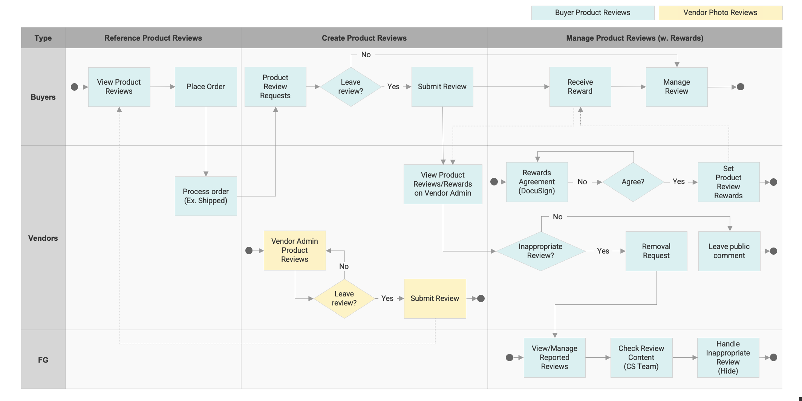
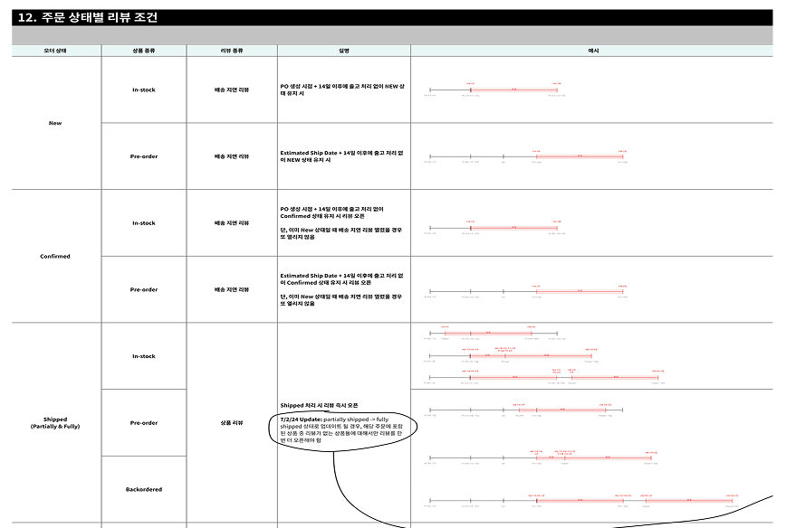
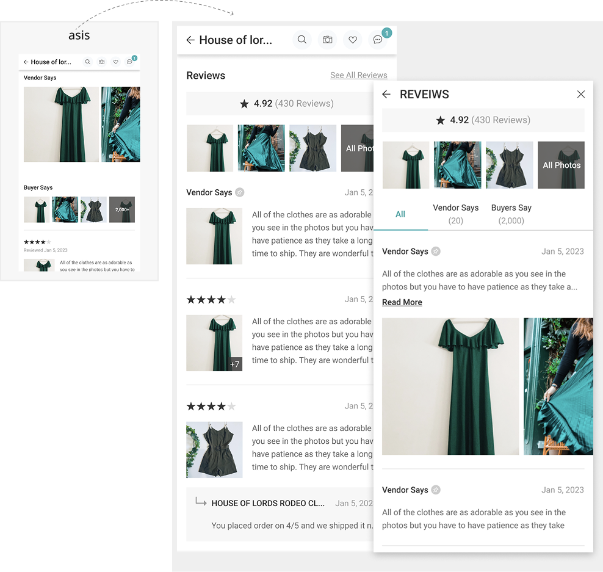
FashionGo 플랫폼과 NHN 사내 매거진의 관련 자료입니다.
| 구분 | 제목 | 링크 |
|---|---|---|
| 실제 서비스 | FashionGo | fashiongo.net |
| 사내 매거진 | NHN Inside · Service | inside.nhn.com/service/106 |
| 사내 매거진 | NHN Inside · People & Culture | inside.nhn.com/peoplenculture/195 |
야놀자 PDP·통합예약·로그인 플로우의 전환율 저하 구간을 사용성 테스트(UT) 기반으로 진단하고, 가설 검증을 통해 "예쁘지만 틀린 안"을 기각한 뒤 달력 UI를 유지한 채 CTA 구조만 재설계한 프로젝트. 데이터가 직관을 반박할 때 데이터를 따른 사례입니다.
야놀자 PDP 진입 후 예약 전환율이 업계 평균 대비 낮은 수준이었고, 정량·정성 분석 결과 "날짜 선택 → 인원 설정" 구간에 이탈이 집중됐습니다. 이를 풀기 위해 PDP · 통합예약 · 로그인 플로우 전반을 UT 기반으로 진단하고 재설계한 프로젝트입니다.
핵심은 결과물이 아니라 과정에 있었습니다. "슬라이더가 직관적이어 보인다"는 디자인 직관을 UT 데이터로 기각하고, 달력 UI를 유지한 채 CTA 영역만 재설계해 전환을 끌어올린 의사결정의 사례입니다.
이 프로젝트는 "직관에 끌려가지 않고 데이터에 따라간 PM의 판단력"을 보여주는 사례입니다. 슬라이더 안은 첫인상이 좋았지만 UT 결과가 반대로 나왔고, 그 데이터를 근거로 안을 기각한 뒤 달력 UI 위에서 CTA 구조만 바꾸는 보수적 안을 선택했습니다.
"예약이 어렵다"는 막연한 가설로 출발하지 않고, 어떤 구간에서 누가 왜 떠나는지를 구간·행동 단위로 쪼개서 정의했습니다.
PDP 진입 후 예약 전환율이 업계 평균 대비 낮은 수준. 트래픽은 충분하지만 결제 직전 단계에서 누수가 크게 발생.
사용성 테스트 결과 "날짜 선택 → 인원 설정" 구간이 이탈 집중 구간으로 확인. 한 화면에서 두 가지 결정이 겹쳐 인지 부하가 큼.
호텔 · 모텔 · 펜션 등 숙박 유형별 정보 구조가 서로 달라, 사용자가 같은 플랫폼 안에서 매번 새로 학습해야 하는 부담.
이 세 문제는 같은 화면의 다른 면입니다. PDP 전환율은 결과 지표이고, 날짜 선택 구간은 원인 지점이며, 숙박 유형별 혼란은 그 원인을 더 어렵게 만드는 배경. 원인 지점부터 풀어야 결과 지표가 움직입니다.
사용성 테스트(UT)와 경쟁사 벤치마킹을 결합해 실제 사용자가 어디서 멈추고 어떤 표현을 쓰는지를 직접 관찰했습니다.
날짜 선택 UI에서 평균 38초가 소요됐고, 5명 중 3명이 실패. 1라운드에서 발견한 가설을 다음 안에 반영하고, 2라운드에서 다시 검증하는 반복 구조로 운영.
"어디를 눌러야 확정되는지 모르겠어요."
— UT 참가자 인터뷰
에어비앤비 · 부킹닷컴 · 호텔스닷컴 3사의 예약 플로우를 분석. 공통점은 "선택"과 "확정"을 명확히 분리한 CTA 구조로, 날짜·인원·옵션을 한 화면에 모으되 다음 단계로 가는 버튼은 시각적으로 분리되어 있다는 점.
업계 평균 전환율 데이터(정량) + UT 인터뷰(정성)를 같이 놓고 비교. 두 데이터가 같은 지점("날짜 선택 구간")을 가리켰을 때 비로소 설계 방향을 확정. 단일 데이터에 의존하지 않는 의사결정 구조를 적용.
설계 과정에서 가장 중요한 결정은 "슬라이더 안을 기각한 것"이었습니다. 보기에는 새롭고 직관적이었지만 UT에서 오히려 오입력이 증가했고, 데이터가 직관을 반박했을 때 데이터를 따랐습니다.
날짜 선택의 인지 부하를 줄이기 위해 달력 UI를 슬라이더 방식으로 전환하는 안을 검토. 한 손 조작·시각적 명료성 측면에서 첫인상이 좋았던 안.
슬라이더 안을 프로토타입으로 만들어 UT 검증. 결과적으로 "원하는 날짜로 정확히 멈추지 못해 오입력이 증가"하는 패턴이 반복 관찰됨. 직관과 정반대 결과.
슬라이더 안을 기각하고, 달력 UI는 그대로 유지하되 "확정" CTA를 하단 고정 버튼으로 분리. 사용자가 어디를 눌러야 다음으로 갈 수 있는지 시각적으로 명확하게 만듦. 큰 안이 아닌 작은 안이 정답인 케이스.
A/B 테스트로 효과가 확인된 뒤, 같은 CTA 패턴을 호텔 · 모텔 · 펜션 등 다른 숙박 유형으로 확장. 숙박 유형별 정보 구조의 차이는 유지하면서, 결정 지점의 일관성을 확보.
이 프로젝트의 자산은 결과 수치보다 "새 아이디어가 직관적으로 옳아 보일 때 일단 검증해보는 습관"입니다. 검증 없이 슬라이더 안을 그대로 출시했다면, 이탈은 다른 형태로 다시 나타났을 것입니다.
최종안은 A/B 테스트에서 통계적으로 유의미한 수준의 전환율 향상을 보였고, 이후 다른 숙박 유형으로 동일 패턴이 확산 적용됐습니다. (구체 수치는 사내 정책으로 비공개.)
| 지표 | 도입 전 | 출시 후 | 해석 |
|---|---|---|---|
| PDP 진입 후 예약 전환율 | 업계 평균 대비 낮음 | +X%p | A/B 통계적 유의미 |
| 날짜 선택 평균 소요 | 38초 | 단축 | CTA 분리 효과 |
| 날짜 선택 실패율 | 3 / 5 (60%) | 감소 | "확정" 지점 명확화 |
| 패턴 확산 | 호텔 단일 | 모텔 · 펜션 등 확장 | 같은 CTA 패턴 적용 |
이번 사례는 "보수적 안이 정답일 수 있다"는 PM의 인식을 만든 프로젝트입니다. 새 UI를 도입하지 않고 기존 UI 위에서 결정 지점만 분리한 작은 변경이, 새 패러다임의 슬라이더 안보다 더 큰 전환 개선을 만들었습니다.
통합예약 플로우의 핵심 화면(객실·시간 선택 → 정보 입력 → 결제·쿠폰)을 정리했습니다.
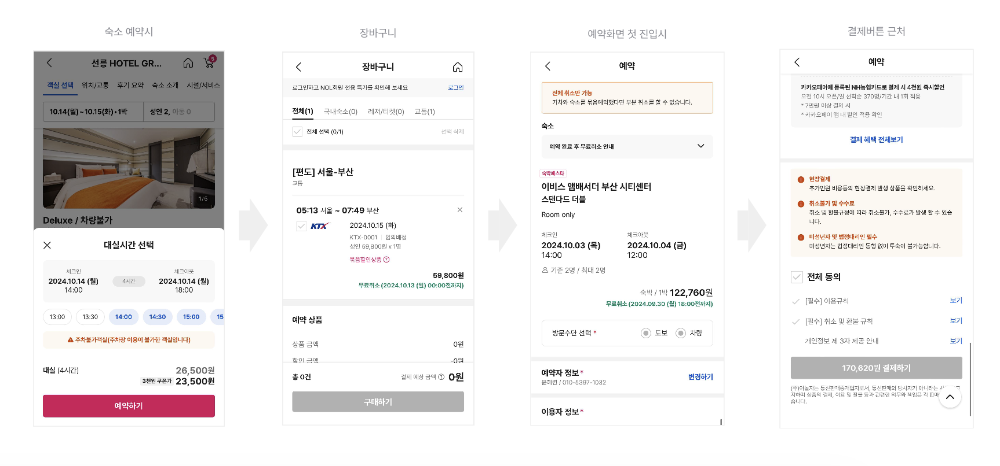
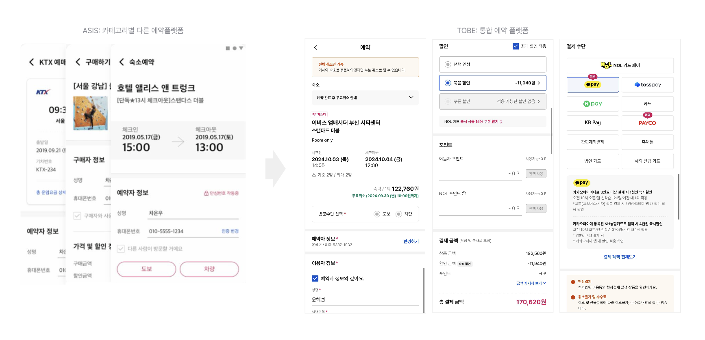
야놀자(NOL) 공식 채널입니다. 통합예약 플로우가 적용된 실제 서비스에 접근할 수 있습니다.
| 구분 | 제목 | 링크 |
|---|---|---|
| 공식 서비스 | NOL (야놀자) | nol.yanolja.com |
| 앱 (Android) | Google Play | play.google.com/.../yanolja |
| 앱 (iOS) | App Store | apps.apple.com/.../id436731843 |
| 뉴스 | 뉴데일리 (2021.06) | biz.newdaily.co.kr/2021061000094 |
국내 유사 앱 중 최초로 MAU 500만을 달성한 만보기 리워드 서비스. 스타트업 초기 멤버로서 리워드 적립 정책 · 사용자 플로우 · 바이럴 루프 · 광고주 운영 화면 · UI/UX 디자인까지 직접 설계하며, 걸음 수 구간별 차등 단가로 광고 수익과 사용자 체류시간을 동시에 최적화한 프로젝트.
캐시워크는 걸음 수를 캐시로 전환해주는 만보기 리워드 서비스입니다. 사용자에게는 운동·이동의 자연스러운 보상을, 광고주에게는 잠금화면을 활용한 새로운 노출 채널을 제공하는 양면 시장 구조로 설계했습니다.
스타트업 초기 멤버로 기획부터 디자인까지 직접 수행했고, 출시 후 국내 유사 앱 중 최초로 MAU 500만을 달성. 잠금화면 활성화 없이도 절반 이상이 만보기만으로 유입되는 자생적 성장 구조를 만들었습니다.
이 프로젝트의 본질은 만보기 앱이 아닙니다. "리워드 비용 < 광고 수익"이 성립해야만 지속되는 양면 시장 위에서, 사용자 행동(걸음)과 광고 노출이 같은 흐름에 묶이는 구조"를 만든 것이 핵심입니다. 단가 정책 하나만 잘못 잡혔어도 같은 서비스가 정반대로 무너졌을 수 있는 케이스입니다.
단순히 "만보기 앱을 만든다"가 아니라, 리워드 서비스가 지속 가능하려면 풀어야 할 세 가지 구조적 제약이 있었습니다. 하나라도 어긋나면 사업이 성립하지 않는 조건입니다.
리워드 단가가 너무 높으면 광고 수익보다 포인트 지급 비용이 커져 사업 자체가 적자. 너무 낮으면 사용자가 떠남. 한 번 잘못 설정하면 되돌리기 어려운 정책 변수.
당시 만보기 앱과 잠금화면 앱은 따로 존재. 둘을 묶어 걸음 → 잠금화면 → 광고 노출 → 리워드까지 하나의 자연스러운 흐름으로 잇는 구조가 없었습니다.
마케팅 예산이 제한된 스타트업이 MAU 500만 규모로 성장하려면, 사용자가 사용자를 데려오는 바이럴 구조가 필수. 비용 없이 유입되는 채널을 시스템 안에 내장해야 했습니다.
세 문제는 사업 모델의 다른 면입니다. 단가 정책(P1)이 흔들리면 광고 수익이 무너지고, 통합 구조(P2)가 약하면 단가가 살아도 매출이 안 만들어지고, 바이럴(P3)이 없으면 둘 다 잘 되어도 성장 한계가 있습니다. 세 축을 동시에 잡아야 양면 시장이 작동합니다.
목표는 "리워드를 지급하면서도 흑자 구조를 유지할 수 있는 만보기 리워드 서비스의 정착"이었습니다. 양면 시장 균형이 깨지지 않은 채 MAU 500만에 도달한 것이 단일 결과 이상의 의미를 가집니다.
| 지표 | 출시 전 | 결과 | 해석 |
|---|---|---|---|
| MAU | 0 | 500만 | 국내 만보기 리워드 최초 달성 |
| 일반 만보기만 사용 비율 | — | 52% | 잠금화면 미활성에도 자연 유입 |
| 리워드 단가 정책 | 없음 | 구간별 차등 (1~5K / 5K+) | 광고 수익 > 포인트 지급 유지 |
| 바이럴 루프 | 없음 | 친구 초대 · 당첨 확률 ↑ | 비용 없는 자생적 신규 유입 |
가장 의미 있는 지표는 MAU 500만보다 "52% 일반 만보기 비율"입니다. 잠금화면 광고에 의존하지 않고도 절반 이상이 자연스럽게 유입된다는 의미이며, 이는 "서비스 자체에 머무를 이유가 있다"는 강력한 검증입니다.
초기 가장 중요한 결정은 "리워드 단가를 어떻게 정할 것인가"였습니다. 일률 단가는 단순하지만 비용·체류시간 양쪽에 모두 비효율적. 해외 사례 분석 후 걸음 수 구간별 차등 단가로 답을 정했습니다.
리워드 단가를 너무 높게 설정하면 광고 수익보다 포인트 지급 비용이 커져 적자 구조가 발생할 가능성. 한 번 사용자에게 익숙해진 단가는 낮추기 어려워, 초기 결정이 사실상 영구적.
미국 StepBet, 일본 토보쿠, 국내 와이프 등 유사 만보기·리워드 서비스의 수익 구조와 단가 정책을 비교 분석. 공통적으로 "낮은 구간은 진입 인센티브, 높은 구간은 체류 인센티브" 구조를 사용한다는 패턴을 확인.
1~5,000걸음 구간은 단가를 낮게, 5,001~10,000 구간은 더 높게 설계. 사용자가 더 많이 걸을수록 인센티브가 커지는 구조로, DAU 체류시간과 광고 노출량을 동시에 최적화.
리워드 비용이 광고 수익 안에서 통제되면서 흑자 구조가 깨지지 않은 채 MAU 500만까지 성장. 단가 정책 하나의 의사결정이 사업 모델 전체를 받치는 케이스가 됨.
이 의사결정은 "감으로 단가를 정하지 않고 해외 레퍼런스의 패턴에서 답을 찾은 사례"입니다. 스타트업 초기에 데이터가 없어 직관에 의존하기 쉽지만, 같은 카테고리의 외국 사례가 곧 데이터가 되어줍니다.
스타트업 초기 멤버 구조 위에서, 기획·UX·정책·바이럴 설계·운영 화면·UI 디자인까지 한 명이 다섯 영역을 동시에 들고 간 케이스입니다. 각 영역이 따로가 아니라 같은 사용자 흐름의 다른 면입니다.
걸음 수 → 캐시 전환 알고리즘과 단가 정책을 직접 수립. 구간별 차등 단가를 적용해 비용 통제와 사용자 체류를 동시에 잡는 정책 설계.
걸음 수 데이터를 잠금화면에 노출하고, 뉴스피드와 리워드 상품으로 자연스럽게 이어지는 한 흐름의 사용자 여정을 설계. 광고 노출이 사용자 행동과 단절되지 않게 만든 것이 핵심.
친구를 초대할수록 당첨 확률이 증가하는 메커니즘으로 바이럴 루프를 설계. 마케팅 예산 없이도 사용자가 사용자를 데려오는 자생적 신규 유입 구조 확보.
광고주가 캠페인을 등록·관리할 수 있는 운영 화면을 기획. 사용자 측 UX와 광고주 측 운영 화면이 같은 데이터를 다르게 보여주도록 설계해, 양면 시장이 같은 시스템 안에서 작동하게 함.
스타트업 초기 구조상 UI/UX 디자인까지 직접 수행. 잠금화면 · 뉴스피드 · 뽑기 · 광고주 페이지의 시각 언어를 일관되게 잡아 서비스 톤을 통합.
서비스 핵심 화면(잠금화면 만보기 · 뽑기 바이럴 루프)을 정리했습니다.
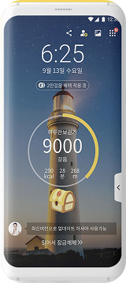
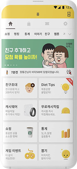
캐시워크 서비스에 직접 접근할 수 있는 공식 채널입니다. 출시 후에도 지속 운영 중입니다.
| 구분 | 제목 | 링크 |
|---|---|---|
| 공식 서비스 | 캐시워크 | cashwalk.com |
| 앱 (Android) | Google Play | play.google.com/.../cashwalk |
| 앱 (iOS) | App Store | apps.apple.com/.../id1220307907 |
| 뉴스 | Nate (2018.05) | news.nate.com/20180510n23197 |